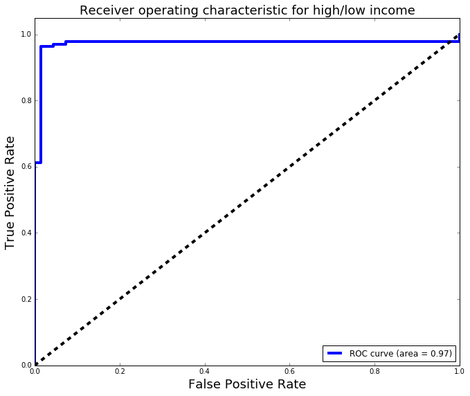

Overview
This week we worked with remote databases, and more advanced topics for conducting logistic regression.
We are going to collect salary information on data science jobs in a variety of markets. Then using the location, title, and summary of the job, we will attempt to predict a corresponding salary for that job.
Problem Statement
You're working as a data scientist with a research firm that specializes in emergency management. In advance of client work, you've been asked to create and train a logistic regression model that can show off the firm's capabilities in disaster analysis. Frequently after a disaster, researchers and firms will come in to give an independent review of an incident. While your firm doesn't have any current client data that it can share with you so that you may test and deploy your model, it does have data from the 1912 titanic disaster that it has stored in a remote database. In this project, we'll be using data on passengers from the Titanic disaster to show off your analytical capabilities. The data is stored in a remote database, so you'll need to set up a connection and query the database (using Python!). After, you'll construct a logistic regression model and test/validate its results so that it will be ready to deploy with a client.
A contracting firm that is rapidly expanding needs to leverage data to win more contracts and wants to be competitive in the hiring market. We need to take a look at what industry factors influence the pay scale for these professionals.
Aggregators like Indeed.com, CareerBuilder.com regularly pool job postings from a variety of markets and industries. Our job is to understand what factors most directly impact data science salaries and effectively, accurately find appropriate data science related jobs in the different cities in US.
Project Goals
The main goals for this project are:
- CCollect your data from an AWS PostgreSQL instance via Python + Jupyter Notebook.
- Perform any necessary data wrangling before building the model
- Create a logistic regression model to figure out the likelihood of a passenger's survival
- Gridsearch optimal parameters for the logistic regression model
- Create a kNN model and optimize its parameters with gridsearch
- Examine and explain the confusion matrices and ROC curves
- Create a report of your findings and detail the accuracy and assumptions of your model
Dataset Description
This dataset gathers the data we were able to scrapped from careerbuilder.com with salary information.
- JobTitle: The title of the position
- Company: The company requesting the candidate, sometimes it can be a consulting company in between the canidates and the real company
- Location: City and State when the position is required
- Summary: A brief description of the document
- Salary: Usually a salary range. Most of them per year, but you can find per hour, per week, per month
- SalaryType: New created column 'Y' Yearly, 'W' weekely, 'H' Hourly, 'M' monthly
- City: The City extracted from loacation
- State: The State extracted from loacation
- Salary Lower: Salary Lower Range extracted from Salary
- Salary Higher: Salary Higher Range extracted from Salary
- Salary Average: Salary average between Lower and Higher
Data Mining
The following new columns were created to facilitate analysis and reporting:
- <
Methods
Findings
Risks and Assumptions
Model
The predictors are:
Our Target:
ROC:

Results and Conclusions
Confusion Table
Classification Report